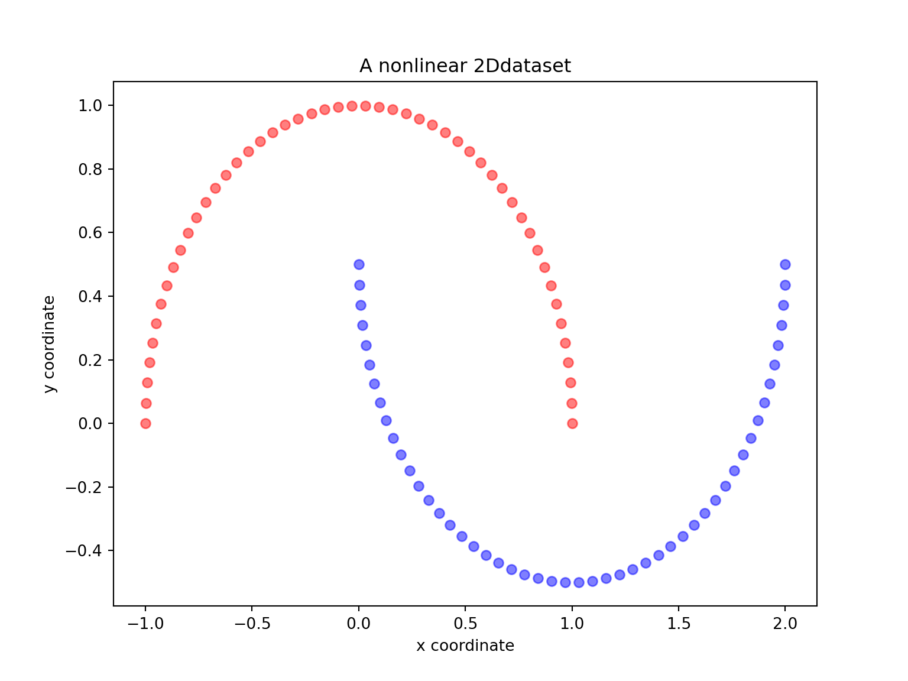
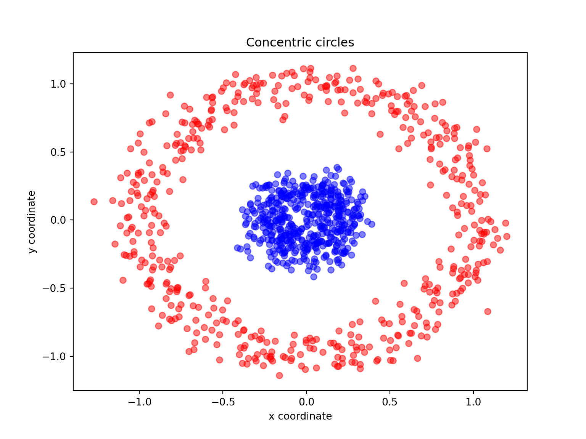

Tutorial: nonlinear dimensionality reduction methods
MAP573 team
10/20/2020
Preliminaries
Package requirements
We start by loading a couple of packages for data manipulation, dimension reduction and fancy representations.
library(tidyverse) # advanced data manipulation and vizualisation
library(knitr) # R notebook export and formatting
library(FactoMineR) # Factor analysis
library(factoextra) # Fancy plotting of FactoMineR outputs
library(corrplot) # Fancy plotting of matrices
library(GGally) # Easy-to-use ggplot2 extensions
library(ggpubr) # Easy-to-use ggplot2 exentesions
library(maps) # Draw Geographical Maps
library(ggrepel) # Automatically Position Non-Overlapping Text Labels with ggplot
theme_set(theme_bw()) # set default ggplot2 theme to black and whiteReminders on Multidimensional scaling (MDS)
There are different types of MDS algorithms, including
Classical multidimensional scaling Preserves the original distance metric, between points, as well as possible. That is the fitted distances on the MDS map and the original distances are in the same metric. Classic MDS belongs to the so-called metric multidimensional scaling category.
It is also known as principal coordinates analysis. It is suitable for quantitative data.
Non-metric multidimensional scaling It is also known as ordinal MDS. Here, it is not the metric of a distance value that is important or meaningful, but its value in relation to the distances between other pairs of objects.
Ordinal MDS constructs fitted distances that are in the same rank order as the original distance. For example, if the distance of apart objects \(1\) and \(5\) rank fifth in the original distance data, then they should also rank fifth in the MDS configuration.
It is suitable for qualitative data.
R functions for MDS
To perform MDS, we may either use:
cmdscale() [stats package]: Compute classical (metric) multidimensional scaling.
?cmdscale()isoMDS() [MASS package]: Compute Kruskal’s non-metric multidimensional scaling (one form of non-metric MDS).
?isoMDS()sammon() [MASS package]: Compute Sammon’s non-linear mapping (one form of non-metric MDS).
?sammon()All of these functions take a distance object as main argument and a number \(k\) corresponding to the desired number of dimensions in the scaled output.
Classical MDS
We consider the swiss data that contains fertility and socio-economic data on 47 French speaking provinces in Switzerland.
Start by loading the swiss package and have a quick look at it.
Perform classical MDS with \(k=2\) and plot the results.
Create \(3\) groups using \(k\)-means clustering and color points by group.
Non-metric MDS
- Perform the same analysis with both Kruskal’s non-metric MDS and Sammon’s non-linear mapping. Can you spot any differences?
Correlation matrix using Multidimensional Scaling
MDS can also be used to detect a hidden pattern in a correlation matrix.
res.cor <- cor(mtcars, method = "spearman")Would you say that correlation is a measure of similarity or dissimilarity? Using correlation, how would you compute distances between objects?
Perform a classical MDS on the mtcars dataset and comment.
Perform a PCA on the mtcars dataset. Comment on the differences with MDS. Recall what are the main differences between MDS and PCA.
Pairwise distances between American cities
The UScitiesD dataset gives ‘straight line’ distances between \(10\) cities in the US.
?UScitiesD
cities <- UScitiesD
cities## Atlanta Chicago Denver Houston LosAngeles Miami NewYork
## Chicago 587
## Denver 1212 920
## Houston 701 940 879
## LosAngeles 1936 1745 831 1374
## Miami 604 1188 1726 968 2339
## NewYork 748 713 1631 1420 2451 1092
## SanFrancisco 2139 1858 949 1645 347 2594 2571
## Seattle 2182 1737 1021 1891 959 2734 2408
## Washington.DC 543 597 1494 1220 2300 923 205
## SanFrancisco Seattle
## Chicago
## Denver
## Houston
## LosAngeles
## Miami
## NewYork
## SanFrancisco
## Seattle 678
## Washington.DC 2442 2329Just looking at the table does not provide any information about the underlying structure of the data (i.e. the position of each city on a map). We are going to apply MDS to recover the geographical structure.
- Run the following code which displays the \(10\) US cities we are considering.
names <- c("Atlanta GA", "Chicago IL", "Denver CO", "Houston TX",
"Los Angeles CA", "Miami FL", "New York NY", "San Francisco CA", "Seattle WA", "WASHINGTON DC")
df <- tibble::as_tibble(us.cities)
df <- df %>% filter(name %in% names)
usa <- map_data("usa")
gg1 <- ggplot() +
geom_polygon(data = usa, aes(x=long, y = lat, group = group), fill = "NA", color = "blue") +
coord_fixed(1.3)
labs <- data.frame(
long = df$long,
lat = df$lat,
names = df$name,
stringsAsFactors = FALSE
)
gg1 +
geom_point(data = labs, aes(x = long, y = lat), color = "black", size = 5) +
geom_point(data = labs, aes(x = long, y = lat), color = "yellow", size = 4) +
geom_text_repel(data = labs, aes(x=long , y=lat, label = names), size=3)
Plot the MDS representation of the pair-wise distances for the \(10\) US cities with their name. Comment on the results. Is this the usual US map? Does this somehow contradict the use of MDS for dimensionality reduction?
Solve the issue above by rotating the figure the proper way.
Kernel PCA
Reminders
Recall that the principal components variables \(Z\) of a data matrix \(X\) can be computed from the inner-product (gram) matrix \(K=XX^\top\). In detail, we compute the eigen-decomposition of the double-centered version of the gram matrix \[ \tilde{K} = (I-M) K (I-M) = U D^2 U^\top, \] where \(M = \frac 1n \mathbf{1}\mathbf{1}^\top\) and \(Z = UD\). Kernel PCA mimics this proceduren interpreting the kernel matrix \(\mathbf K = (K(x_i,x_{i^{'}}))_{1 \leq i,i^{'} \leq n}\) as an inner-product matrix of the implicit features \(\langle \phi(x_i), \phi(x_{i^{'}}) \rangle\) and finding its eigen vectors.
With Python using reticulate in R
library(reticulate)
reticulate::use_virtualenv("r-reticulate")
reticulate::py_config()## python: /usr/share/miniconda/envs/MAP573/bin/python3
## libpython: /usr/share/miniconda/envs/MAP573/lib/libpython3.7m.so
## pythonhome: /usr/share/miniconda/envs/MAP573:/usr/share/miniconda/envs/MAP573
## version: 3.7.8 | packaged by conda-forge | (default, Jul 31 2020, 02:25:08) [GCC 7.5.0]
## numpy: /usr/share/miniconda/envs/MAP573/lib/python3.7/site-packages/numpy
## numpy_version: 1.19.4
## umap: [NOT FOUND]
##
## python versions found:
## /usr/share/miniconda/envs/MAP573/bin/python3
## /usr/bin/python3
## /usr/bin/python# py_install("sklearn" , pip=TRUE) # you need to install package sklearn first time
# py_install("matplotlib", pip=TRUE) # you need to install install matplotlib first timeLet us start with a simple example of the two half-moon shapes generated by the make_moons functions from sklearn_learn.
import matplotlib.pyplot as plt
from sklearn.datasets import make_moons
X, y = make_moons(n_samples=100, random_state=123)
plt.figure(figsize=(8,6))
plt.scatter(X[y==0, 0], X[y==0, 1], color='red', alpha=0.5)
plt.scatter(X[y==1, 0], X[y==1, 1], color='blue', alpha=0.5)
plt.title('A nonlinear 2Ddataset')
plt.ylabel('y coordinate')
plt.xlabel('x coordinate')
plt.show()
Are the two half-moon shapes linearly separable? Do you expect PCA to give satisfactory results? Perform a PCA using sklearn with n_components \(=1\) and \(2\). Comment.
Perform a KernelPCA using the KernelPCA function from sklearn with the rbf kernel and \(\gamma=15\) with both n_components \(=1\) and \(2\). Comment. Try different values for \(\gamma\) and different kernels. Comment.
Concentric circles
Another well-known example for which linear PCA will fail is the classic case of two concentric circles with random noise: have a look at make_circles.
from sklearn.datasets import make_circles
import matplotlib.pyplot as plt
import numpy as np
X, y = make_circles(n_samples=1000, random_state=123, noise=0.1, factor=0.2)
plt.figure(figsize=(8,6))
plt.scatter(X[y==0, 0], X[y==0, 1], color='red', alpha=0.5)
plt.scatter(X[y==1, 0], X[y==1, 1], color='blue', alpha=0.5)
plt.title('Concentric circles')
plt.ylabel('y coordinate')
plt.xlabel('x coordinate')
plt.show()
- Again, perform both a linear and kernel PCA on the make_circles dataset
Swiss roll
Unrolling the Swiss roll dataset is a much more challenging task (see Swiss roll).
from sklearn.datasets import make_swiss_roll
from mpl_toolkits.mplot3d import Axes3D
import matplotlib.pyplot as plt
X, color = make_swiss_roll(n_samples=800, random_state=123)
fig = plt.figure(figsize=(7,7))
ax = fig.add_subplot(111, projection='3d')
ax.scatter(X[:, 0], X[:, 1], X[:, 2], c=color, cmap=plt.cm.rainbow)
plt.title('Swiss Roll in 3D')
plt.show()
- Again, try to perform both linear and kernel PCA on the Swiss roll dataset. Try with different values of \(\gamma\). Are you satisfied with the results?
Locally Linear Embedding
In 2000, Sam T. Roweis and Lawrence K. Saul Nonlinear dimensionality reduction by locally linear embedding introduced an unsupervised learning algorithm called locally linear embedding (LLE) that is better suited to identify patterns in the high-dimensional feature space and solves our problem of nonlinear dimensionality reduction for the Swiss roll.
Locally linear embedding (LLE) seeks a lower-dimensional projection of the data which preserves distances within local neighborhoods. It can be thought of as a series of local Principal Component Analyses which are globally compared to find the best non-linear embedding.
- Using the locally_linear_embedding class, ‘unroll’ the Swiss roll both in \(1\) and \(2\) dimensions.